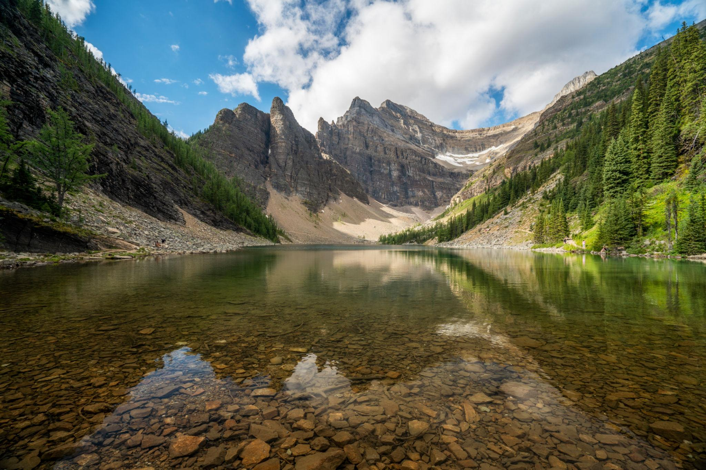

← 레이크 루이스
🥾 Lake Agnes Trail
Lake Louise
⭐ 레이크 루이스 최고의 입문 트레킹과 전통 티하우스를 만나는 코스

📅 우리 일정
Day 3 오후 (추천 코스)
🏞 기대 풍경
🏔 에메랄드빛 Lake Agnes
☕ 1905년부터 이어온 Tea House
🌲 울창한 침엽수 숲길
💧 작은 폭포와 계곡
📸 로키를 대표하는 풍경
📏 기본 정보
🚶 걷는 거리
왕복 7.4km
⏱ 걷는 시간
약 2.5~3시간
💪 난이도
보통
📈 고도차
약 400m
🚻 편의시설
✔ 화장실 (레이크 루이스 주차장)
✔ Lake Agnes Tea House
✔ 식수 및 간단한 간식 구매 가능 (티하우스)
✖ 트레일 중간 별도 편의시설 없음
🎒 준비물
👟 트레킹화 또는 접지력 좋은 운동화
💧 물 500ml 이상
🧥 바람막이
💳 티하우스 이용 시 카드 또는 현금
💡 여행 Tip
✔ Lake Agnes Tea House는 현금을 함께 준비하면 더욱 편리합니다.
✔ 오전보다 오후에는 이용객이 많아질 수 있으므로 잠시 대기할 수 있습니다.
✔ 호수 주변에서 잠시 쉬며 로키의 풍경을 여유롭게 감상해 보세요.
✔ 체력이 충분하다면 Big Beehive까지 이어서 오르면 최고의 전망을 만날 수 있습니다.
🍰 Tea House 추천 메뉴
☕ Tea House Blend Tea (대표 홍차)
🥣 오늘의 수프 (Soup of the Day)
🫓 Tea Biscuit (시그니처 메뉴)
🍫 Chocolate Cake (인기 디저트)
📍 Google Maps
🗺 트레일 지도
← 레이크 루이스